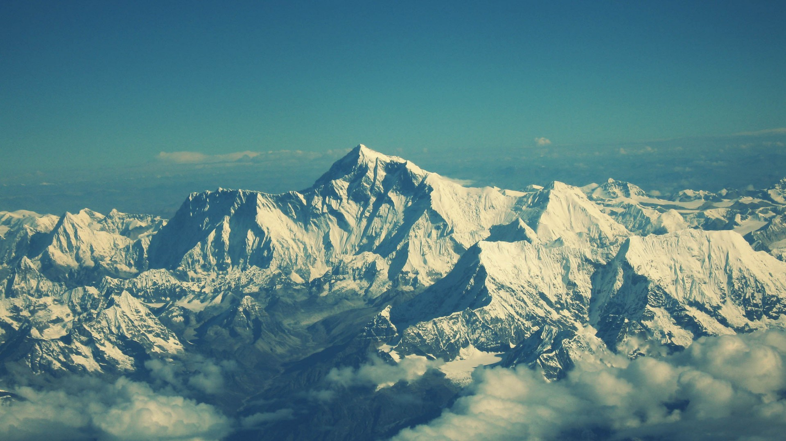

Well, I'm back. ~2,000 miles and I'm done. Months of long days in the mountains and hard nights on the ground give you many things: perseverance, perspective, solemnity, and an ass carved out of wood.
You cannot live your entire life vicariously. As much as adventure novels and action movies can awaken a sense of spirit and impetus in oneself, they are no true replacement for living.
In modern America, we've been told that what we seek in life is comfort. The campaigns of almost any consumer product tries to sell an idea, not just a product. The idea that what you need is more, to make life easier. But an easy life is barely a life at all. In words by Joseph Conrad, Hard work is " ".
I've attached these few photos to inspire, (not just to brag about all the cool shit I saw out there) and kindle the small flame deep inside everyonr that burns for some new experience. Something profound, outside the realm of everyday life.
Because so what if wildfires burn halfjsjsks or you lose your wallet and hike 500 miles with no money or id, or if 30 ft of snow covers the trail over the next 200 miles, or mice somehow eat 4 goddamn pounds of trail mix in one night which you were saving for lunch for the next week. You keep going.
 To go places and do things that have never been done before – that’s what living is all about.So please, take a moment and find that impetus within in you that strives for something more. Be inspired.